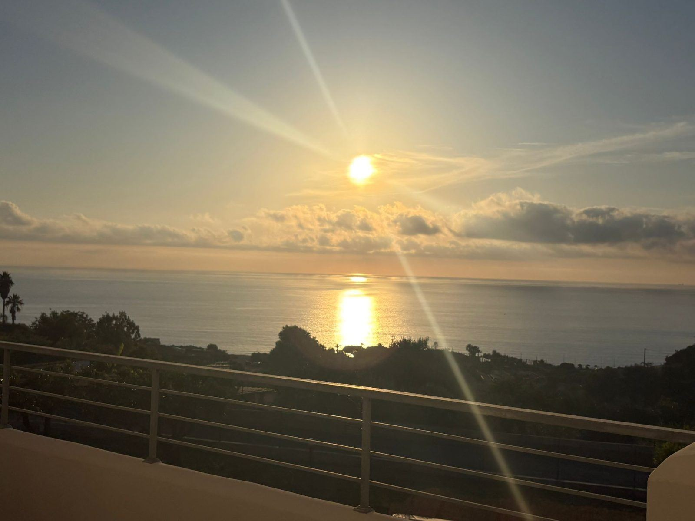

Capo Vaticano: playas, calas y vistas

Capo Vaticano es el promontorio más famoso de la Costa de los Dioses, en el municipio de Ricadi, a pocos kilómetros de Tropea. Acantilados verticales, arena clara y un mar de colores increíbles lo convierten en una parada obligada para quien pasa sus vacaciones en esta parte de Calabria.
Las playas más bonitas
La más conocida es la playa de Grotticelle, con agua transparente y fondos perfectos para el snorkel. A lo largo de la costa hay además muchas calas y ensenadas pequeñas, algunas fáciles de alcanzar a pie, otras solo desde el mar. Si te gusta el mar tranquilo, ve temprano por la mañana o hacia el atardecer.
El mirador de Capo Vaticano
Desde el mirador de Capo Vaticano se abre uno de los panoramas más amplios del Tirreno. En los días despejados se ven las Islas Eolias y el perfil del Stromboli. Es el lugar ideal para ver la puesta de sol.
Capo Vaticano desde el mar
La mejor forma de descubrir las calas escondidas es un paseo en barco desde Tropea: se navega a lo largo de la costa, se entra en las bahías más bonitas y se para varias veces para bañarse. Puedes elegir entre la excursión en barco o lancha o alquilar una lancha sin licencia y decidir tú dónde parar.
Cuándo ir
Para el mar, el periodo ideal va de junio a septiembre. La primavera y el principio del otoño son perfectos si prefieres temperaturas más suaves, menos gente y paseos panorámicos.
Dónde alojarse en Capo Vaticano
Alojarse aquí significa tener el mar a pocos minutos y Tropea muy cerca. Entre nuestras casas de vacaciones encontrarás apartamentos con vistas al mar y una villa con piscina panorámica entre olivos. Para moverte entre playas y pueblos, echa un vistazo al alquiler de coches y motos.
En resumen
- Playa imprescindible: Grotticelle.
- Mejor momento para las vistas: el atardecer desde el mirador.
- Experiencia recomendada: el paseo en barco entre las calas.
¿Quieres organizar un día en Capo Vaticano a tu medida? Escríbenos y te recomendamos el mejor plan.